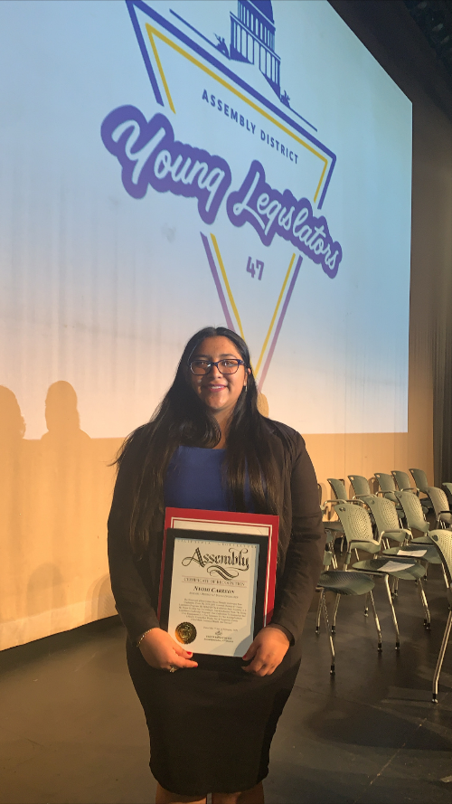

Nyomi Carreon
Nyomi Kristine Carreon graduate high school from Eisenhower Senior High school located in Rialto, California. From there she went straight to the University of California, Riverside to pursue a degree in Political Science.
With this bachelors degree in political science Nyomi will apply to law schools in the area and across the country in the pursuit of a Juris Doctorate degree. With this degree she will become a family lawyer fighting for the well being of those who have no say in the times where their voices matter the most.
Currently Nyomi is working as an AVID Tutor working with middle school age children in the same district she attened Elementary, Middle, and High school. With the goal of interacting with children to understand them better so as to prepare for her future career working with them.
Experience
AVID Tutor
• Assist in teaching study skills and other aspects of college preparation.
• Take responsibility for the tone and atmospherer of the AVID classroom.
• Evalutae student binders, including calendars, calss and textbook notes, and learning logs.
President of Eisenhower Senior High School's Speech and Debate Club
• Organizing Speech and Debate Tournaments with surrounding schools and school districts.
• etc etc
Education
UC Riverside
Portfolio
